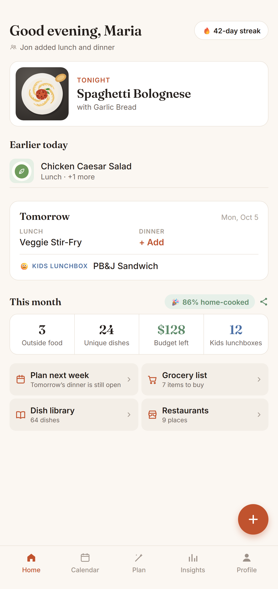

Most meal planners push new recipes. Sofra does the opposite: it remembers what your family actually eats and plans the week from that.

Log meals in about ten seconds. After a week or two, one tap builds next week from dishes your family already loves — balanced across cuisines.
Home shows tonight's meal first, and every evening tomorrow's plan is ready. Anything still open is one tap to fill — or let Sofra decide.
Choose how long before a dish can come back (7 days by default). Sofra respects it across sides and already-planned meals.
"Haven't made in a while" surfaces dishes your family loved but stopped cooking.
Let Sofra plan from your history: it never repeats a dish within the days you choose and resurfaces dishes you haven't made in a while.
Plan from what they already eat. Sofra builds the week only from dishes your family has cooked, not from unfamiliar recipes.
It favours dishes you haven't had recently and your favourites, mixes cuisines, and skips anything you only ever order from restaurants.
Yes. Sofra is free, with no ads, on iPhone and Android.